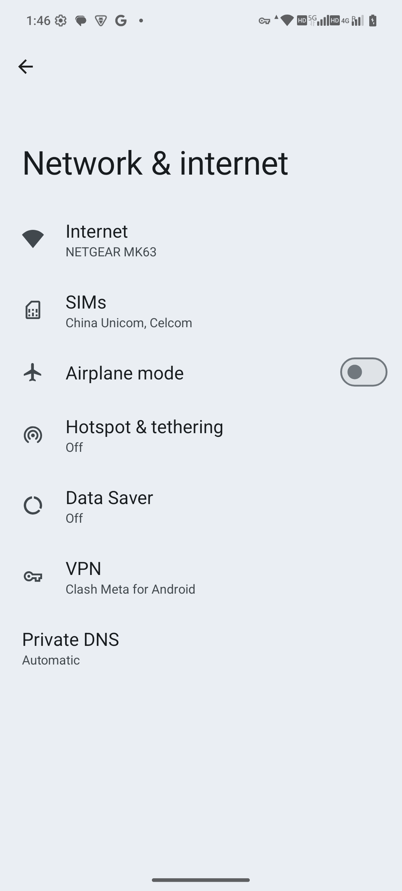

Network and connections / wifi
Wi-Fi and internet troubleshooting
Connect to trusted Wi-Fi and distinguish a router connection from working internet access.
This chapter uses MAG1WW60-1 evidence only. Reference steps are separate from the actions actually recorded.
Settings → Network & internet → Internet
Before you start
- Your own Wi-Fi network and password
- Do not record or display passwords, QR codes or real network names
- The user must complete captive-portal authentication
Reference steps · see recorded scope below
- Open Network & internet → Internet. This entry was verified; nearby networks are excluded from the public captures.
- If Wi-Fi is off, use the actual switch and wait for the network list to refresh.
- Select your trusted network, confirm its name, enter the password on the device and connect as prompted.
- Check the connection status, then open a known working website. “Connected” alone does not guarantee internet access.
- If prompted to sign in to the network, complete its captive portal. Do not enter sensitive account credentials on an unknown network.
- To disconnect, use Disconnect on the network details page or turn off Wi-Fi. Forget deletes saved network information; use it carefully.
Recorded entry and controls
The recording shows Network & internet with the Internet entry, then Data Saver and back. It does not open nearby networks, enter a password or test reconnection.
MAG1WW60-1 observed scope
Internet and SIMs entries on the Network & internet overview, followed by Data Saver and back. No SIM details, phone numbers, Wi-Fi reconnection, SIM switching or preference changes are shown.
After inspection
Return using Back. This capture did not change any network or security setting.
Troubleshooting
- Authentication failed: check the password and network selection
- Connected without internet: check the captive portal, router, VPN and Private DNS
- Network missing: check distance, supported bands and router broadcasting
Entry demonstration only
The recording shows Network & internet with the Internet entry, then Data Saver and back. It does not open nearby networks, enter a password or test reconnection.
The reference steps above extend beyond this capture. This material is not evidence of a completed connection or security-function test.
MAG1WW60-1 screenshots and recordings · 16 October 2026
These captures confirm only the visible screens and actions shown on this development build. They do not verify every setting, external accessory or end-to-end feature. Android touch markers show ADB-injected input; the native coordinate strip is retained. No app icons are masked.


MAG1WW60-1 · 2026-10-16 · Original English screenshot
Internet and SIMs entries on the Network & internet overview, followed by Data Saver and back. No SIM details, phone numbers, Wi-Fi reconnection, SIM switching or preference changes are shown.
MAG1WW60-1 · 2026-10-16 · Internet and SIMs entries on the Network & internet overview, followed by Data Saver and back. No SIM details, phone numbers, Wi-Fi reconnection, SIM switching or preference changes are shown.
Current capture status
See the dated MAG1WW60-1 screenshots and recordings above.